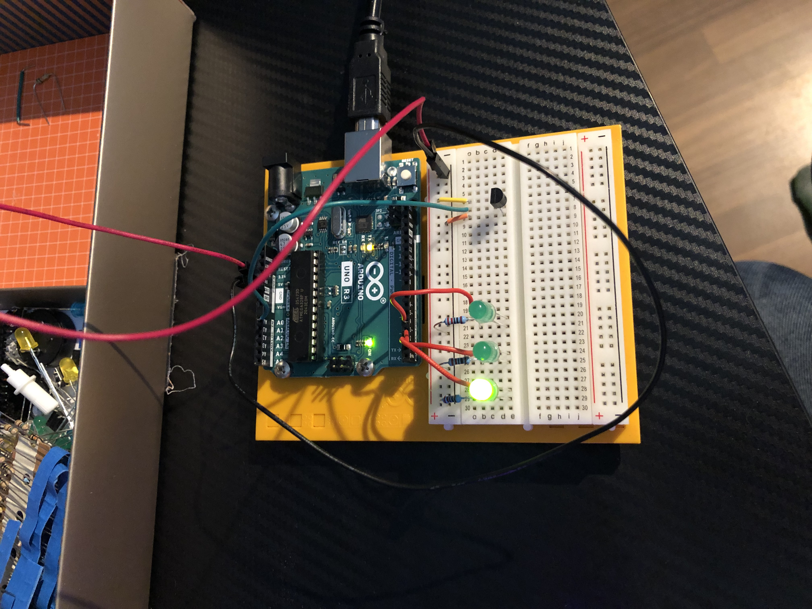

Je nach Temperatur leuchten die LEDs
Ab 22°C leuchtet das Erste, ab 24°C das Zweite und ab 26° das Dritte.
const int sensorPin = A0;
const float baselineTemp = 20.0;
void setup() {
Serial.begin(9600); //Stellt eine Verbindung zwischen Arudino und dem Computer her mit einer Geschwindigeit von 9600 bit/s.
for (int pinNumber = 2; pinNumber < 5; pinNumber++) {
pinMode(pinNumber, OUTPUT);
digitalWrite(pinNumber, LOW);
} //Pins 3-5 werden initialisiert und leuchten (noch) nicht
}
void loop() {
int sensorVal = analogRead(sensorPin); //liest den Wert vom Sensor; Der Wert ist die Spannung die auf dem Pin liegt (0-1023)
Serial.print("Sensor Value: "); //Schreibt etwas auf den Serial Monitor
Serial.print(sensorVal);
float voltage = (sensorVal/1024.0)*5.0; //Umrechnung vom Sensor-Wert auf Volt
Serial.print(", Volts: ");
Serial.print(voltage);
float temperature = (voltage - 0.5)*100; //Umrechnung von Volt auf Temperatur
Serial.print (", ");
Serial.print (temperature);
Serial.println ("°C"); //println startet nach dem Text eine neue Zeile
if(temperature<baselineTemp+2){
digitalWrite(2, LOW);
digitalWrite(3, LOW);
digitalWrite(4, LOW);
}else if(temperature>=baselineTemp+2&&temperature<baselineTemp+4){
digitalWrite(2, HIGH);
digitalWrite(3, LOW);
digitalWrite(4, LOW);
}else if(temperature>=baselineTemp+4&&temperature<baselineTemp+6){
digitalWrite(2, HIGH);
digitalWrite(3, HIGH);
digitalWrite(4, LOW);
}else if(temperature>=baselineTemp+6){
digitalWrite(2, HIGH);
digitalWrite(3, HIGH);
digitalWrite(4, HIGH);
} //Pins leuchten je nach Temperatur: unter 22°C keine, 22-24°C eines, 24-26°C zwei, über 26°C alle drei
delay(200);
}
